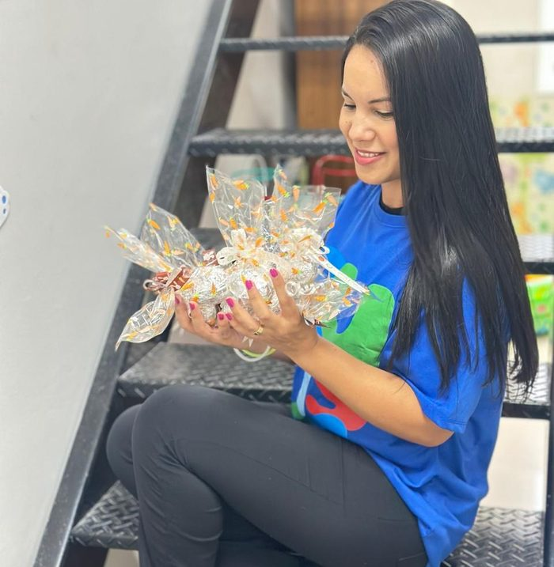

Instituto de Psicologia · Tucuruvi, São Paulo
Um espaço de escuta para cada fase da sua família.
Psicoterapia, avaliação neuropsicológica e terapia ABA para crianças, adolescentes e adultos — presencial em Tucuruvi ou online, por convênio ou particular.
Para quem é
Cuidado psicológico em cada etapa da vida
O ser humano está em constante desenvolvimento — e a terapia pode ser uma aliada em qualquer uma dessas fases, com uma abordagem pensada para cada momento.
Crianças
Desenvolvimento emocional, comportamento e acompanhamento com a família.
Adolescentes
Identidade, ansiedade, escola e relações em uma fase de tantas mudanças.
Adultos
Ansiedade, carreira, autoconhecimento e os desafios do dia a dia.
Casais e famílias
Conflitos de relacionamento e comunicação, com escuta para os dois lados.
Especialidades
Um cuidado completo, sem precisar procurar em outro lugar
Da psicoterapia à avaliação neuropsicológica, reunimos as principais frentes de cuidado com a mente sob o mesmo teto.
Psicoterapia individual
Acompanhamento contínuo para ansiedade, depressão, autoconhecimento e desafios do dia a dia — na abordagem mais adequada para você.
AgendarTerapia de casal
Um espaço neutro para trabalhar comunicação, conflitos e reconstruir a conexão entre os dois.
AgendarTerapia ABA — TEA e DI
Análise do Comportamento Aplicada para o desenvolvimento de habilidades e maior independência, com especialização dedicada da equipe.
AgendarAvaliação neuropsicológica
Exame que mede e descreve o perfil cognitivo, ajudando a esclarecer suspeitas de alterações neurológicas e outros transtornos.
AgendarTerapia ocupacional
Estímulo de habilidades motoras, sensoriais e de rotina para mais autonomia no dia a dia.
AgendarFonoaudiologia
Acompanhamento da fala, linguagem e comunicação, em conjunto com o restante da equipe quando necessário.
AgendarComo funciona
Três passos até a primeira sessão
Chame no WhatsApp
Conte, em poucas palavras, o que você está buscando — para você, seu filho ou sua família.
Conversa inicial
Entendemos sua demanda, tiramos dúvidas sobre convênio e indicamos o profissional mais adequado.
Primeira sessão
Presencial em Tucuruvi ou online, no horário que fizer sentido para a sua rotina.
Quem vai te acompanhar
Fundadoras do Instituto Tucuruvi
Jéssica Rodrigues
Fundadora e responsável técnicaPsicóloga clínica, com ênfase em psicoterapia para adolescentes, adultos e idosos.
CRP 06/133493

Priscila Teixeira
Psicóloga clínicaÊnfase em psicoterapia para crianças e adolescentes, com especialização em ABA para TEA e DI.
"Nossa missão é promover saúde emocional e qualidade de vida para todas as idades — com atendimentos que vão além do cuidado individual, buscando transformar vidas."
Convênios
Convênio ou particular — você escolhe o que fica melhor
Aceitamos cobertura para psicoterapia, terapia ABA, fonoterapia, terapia ocupacional e avaliação neuropsicológica pelos convênios abaixo, além de atendimento particular em todas as especialidades.
Não tem certeza se o seu plano cobre? A gente confirma pra você em poucos minutos.
Consultar meu convênioDúvidas frequentes
Perguntas que a gente mais escuta
Vocês atendem particular?
Sim! Realizamos atendimentos particulares em todas as especialidades, além de aceitar SulAmérica e Care Plus. Fale com a gente para saber as opções para o seu caso.
Quais os horários de funcionamento?
Segunda a sexta-feira das 8h às 20h, e sábado das 8h às 17h. Para confirmar o funcionamento em feriados, acompanhe nosso Instagram ou entre em contato.
O atendimento é presencial ou online?
Os dois. Você pode ser atendido presencialmente na nossa sede em Tucuruvi, São Paulo, ou online — o que fizer mais sentido para a sua rotina.
Como escolher o profissional certo?
É importante se sentir à vontade com quem vai te acompanhar. Na conversa inicial pelo WhatsApp, entendemos sua demanda e indicamos a psicóloga e a abordagem mais adequadas para o seu momento.
Quais idades vocês atendem?
Crianças, adolescentes, adultos e idosos — o ser humano está em constante desenvolvimento, e temos uma abordagem pensada para cada fase da vida.
Vamos conversar?
Dar o primeiro passo pode começar com uma mensagem.
Sem compromisso: conte o que você está buscando e a gente te ajuda a entender os próximos passos.
Chamar no WhatsApp